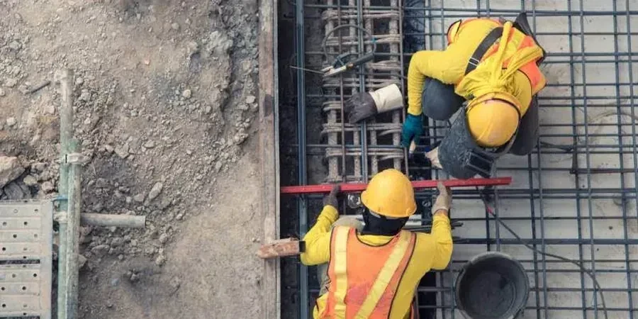

Our firm provides comprehensive geotechnical services in Augusta, Georgia, supporting a wide range of projects from residential developments to commercial and infrastructure works. We specialize in site characterization, subsurface investigations, foundation design, and construction monitoring, ensuring that every project is built on a solid understanding of the local ground conditions. By combining regional expertise with standardized testing and analysis, we deliver practical, code-compliant solutions that address the specific challenges of the Augusta area. Our team coordinates closely with local contractors and authorities to streamline project delivery and mitigate subsurface risks. Explore our standard penetration testing and slope stability analysis services for more details.
